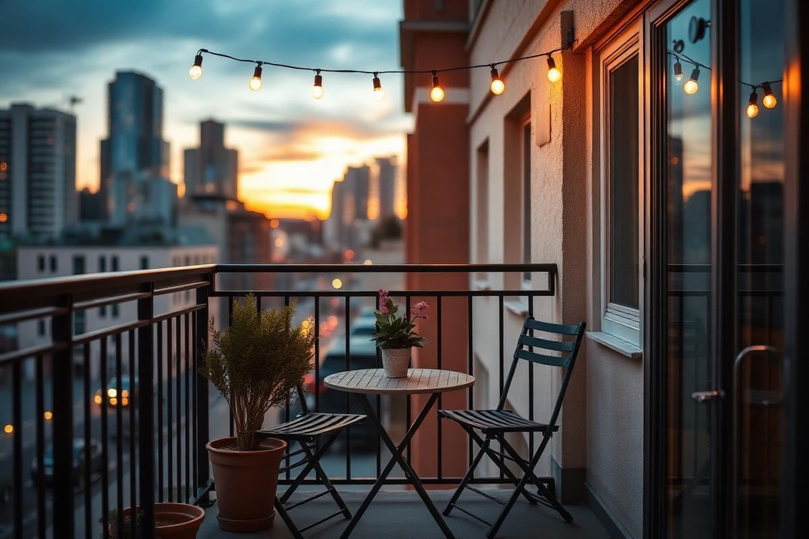
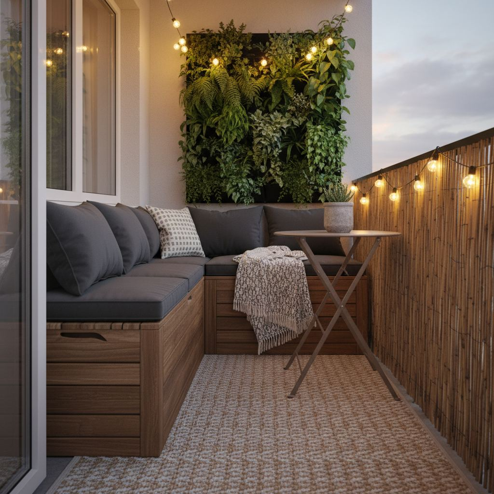

Small Balcony Decor Ideas: Turn 30 Square Feet Into a Room

A 30-square-foot balcony is small — but so is a hotel bathtub, and people spend a lot on those. With the right pieces, a balcony becomes the room you use most in summer.
Furniture that fits
Folding chairs and a small round bistro table beat a fixed set every time. When you want the balcony open, fold everything against the wall. Look for weatherproof frames — powder-coated steel or teak both hold up well.
Plants that survive
Assess sun hours honestly before you shop. Full sun (6+ hours) suits herbs, lavender, and geraniums. Partial shade suits ferns and hostas. Rail-mounted planters double your usable planting space.
Add ambient light
Solar string lights, a lantern with an LED candle, or a battery-powered table lamp turn a balcony from a place you sit into a place you linger. Warm-white beats cool-white outdoors, too.

Flooring Foundations for Cozy Comfort
The floor of your small balcony is prime real estate for setting the tone. Don't underestimate the power of a foundational surface in defining your space. Replacing concrete or tired tiles can transform the feel dramatically, and it's often a DIY job you can tackle in a weekend.
Interlocking deck tiles are your best friend here. Brands like IKEA's RUNNEN (starting at $2.99 per 12x12 inch tile) or similar options from The Home Depot ($2-$4 per sq ft) come in wood, composite, or even artificial grass. For a 30 square foot balcony (e.g., 5x6 feet), you'd need roughly 30 tiles, costing around $90-$120. Measure carefully! A 10x3 ft balcony, also 30 sq ft, requires a different layout and potentially more cutting. Laying them out is like giant LEGOs; just ensure the first row is perfectly straight. Consider the substrate: if your balcony has drainage issues, raise the tiles slightly with rubber matting underneath to allow water flow. Always check your landlord's policy on permanent alterations before committing.
Vertical Gardening: Maximizing Greenery
When horizontal space is a luxury, go vertical. Wall-mounted planters and trellises are design heroes for small balconies. They add lushness without sacrificing precious floor area, and can even create a sense of privacy.
Choosing Your Vertical System
- Wall-mounted pockets: Fabric options like the Mr. Stacky Wall Planter ($25 for a 4-pocket unit) are lightweight and easy to install with basic hooks or screws. Ideal for herbs, small flowers, or succulents. For a 3x5 ft section of wall, two of these can create significant impact.
- Trellises with climbing plants: A simple bamboo trellis (starting at $15 for a 6-foot section) or a metal grid can support jasmine, clematis, or even small vining vegetables like cherry tomatoes. Place a planter at the base (e.g., a 12-inch terracotta pot for climbing plants) and guide the growth.
- Tiered planters: These self-contained units, often plastic or metal, stack pots vertically, like the Bloem Saturn Planter ($30 for a 3-tier unit). Great for a variety of edibles or ornamentals, occupying a small footprint of about 15x15 inches on the floor.
Ensure your chosen system can handle the weight once watered. Wall anchors (toggle bolts for hollow walls, concrete anchors for masonry) are crucial. Most balcony walls are concrete or brick, so a hammer drill is your best friend for installation. Aim for plants that don't need excessive root space or width.
Privacy Screening: Strategic Sanctuaries
Even on a small balcony, privacy can turn an exposed space into a true sanctuary. Strategic screening can block nosey neighbors or an unsightly view, defining your personal outdoor room.
Effective Screening Solutions
- Bamboo roll fencing: Available in 6-foot tall sections, typically 10-15 feet long, starting around $40-$60. You can cut these to size. Secure it to existing railings with zip ties or wire every 6-12 inches. This provides a natural, tropical feel. Make sure it's taut to prevent flapping in wind.
- Artificial foliage screens: These come in expandable lattice panels or rolls, mimicking ivy or hedges. A 3x6 foot panel costs about $30-$50. They offer instant, dense coverage and require no maintenance. Attach securely to railings or walls. Look for UV-resistant options to prevent fading.
- Outdoor fabric panels: Weather-resistant canvas or mesh curtains (starting at $20-$40 per panel, 5x7 feet) can be suspended from a tension rod or a simple wire run across the top of your balcony enclosure. These offer flexible privacy – open them when you want sun, close them for seclusion. Choose a heavy-duty outdoor fabric to resist mildew and sun damage.
Before installing anything permanent, review your building's rules. Temporary or non-damaging solutions are always safer. Consider the wind factor; choose materials that won't become sails in a storm.
Smart Storage Solutions
Clutter shrinks even the most generously sized space, and on a 30 square foot balcony, it's an immediate problem. Integrating clever storage will keep your area tidy and functional, making it feel larger and more inviting.
Maximizing Every Inch
- Bench with built-in storage: This is a dual-purpose superstar. A compact outdoor storage bench, like those from Keter (e.g., Keter Hudson storage bench, 51.7W x 23.3D x 34H inches, approx $100-$150), provides seating for two and hides cushions, gardening tools, or even small blankets. Measure your balcony depth carefully; many balconies are only 3-4 feet deep.
- Wall-mounted shelving units: Simple floating shelves (e.g., IKEA LACK, $20/shelf for 43 inches) or even a small slatted wall shelf can hold small planters, decorative items, or frequently used items like sunscreen. Ensure they're rated for outdoor use and properly anchored into concrete or brick walls with appropriate hardware (e.g., Tapcon screws).
- Folding wall tables: A small, narrow table that folds flat against the wall frees up floor space when not in use. Many come with built-in shelving underneath. Brands like SONGMICS offer these for around $60-$90, typically 24-30 inches wide. Look for models with sturdy brackets that can support a cup of coffee and a small plate, not just a feather.
Before buying, sketch out your balcony layout and mark where storage makes the most sense without impeding pathways or views. Don't forget vertical space above eye level for less-frequently used items.
Textile and Texture: Layering Comfort
Once the big pieces are in place, textiles and textures are what elevate a small balcony from functional to fabulous. They add warmth, personality, and that coveted 'room' feeling, even outdoors.
Bringing the Indoors Out
- Outdoor rugs: A weather-resistant rug (starting at $40 for a 4x6 ft synthetic polypropylene rug) anchors the space, defines the 'room,' and adds a pop of color or pattern. Look for low-pile options that are easy to clean with a hose and resistant to mold and mildew. A rectangular rug often works best, leaving a border of flooring visible to make the area feel larger. For a 5x6 ft balcony, a 4x5 ft rug would be perfect.
- Throw pillows and blankets: Introduce comfort with outdoor-rated throw pillows (starting at $15-$25 each for Sunbrella-like fabric). Coordinate colors with your plants or furniture. A cozy, weather-resistant throw blanket ($30-$50) draped over a chair invites relaxation. Store these in your storage bench or indoors when not in use to prolong their life.
- Curtains or drapes: As an extension of privacy, sheer or light filtering outdoor curtains can soften harsh sunlight, add a touch of elegance, and create a sense of enclosure. Polyester or solution-dyed acrylic are good choices, often priced around $20-$40 per panel. Install on a tension rod or through a simple outdoor curtain wire system for easy removal.
When selecting textiles, prioritize performance fabrics designed for outdoor use. They resist fading, mold, and mildew, which is crucial for longevity in exposed conditions. Don't be afraid to mix patterns and textures; it adds visual interest and depth.
Key takeaways
- Folding furniture keeps the balcony flexible.
- Match plants to actual sun hours.
- Warm ambient light makes it a room.
Frequently asked questions
Do balcony plants need special pots?
Yes — always use pots with drainage holes and saucers. Waterlogged roots kill more balcony plants than any pest.

Sophia Bennett is a certified interior stylist and the senior editor at Styleire. She has spent more than eight years helping homeowners and renters create warm, functional interiors, with hands-on experience across small city apartments and family homes. Her work has been informed by close collaboration with independent designers, craftspeople, and product testers.
View full profile →Related reading

Outdoor Patio Styling Guide: Furniture, Rugs, and Light
A styled patio uses the same rules as a good living room — with materials that survive the weather.